아이의 몸은 먹고, 자고, 자라는 리듬으로 움직여요. 좋은꿈참사랑한의원 한방소아과 진료과목에서 저는 편식, 잦은 감기, 잠, 키 걱정, 수험생의 목·어깨 통증 같은 얘기를 아이와 보호자께 같이 여쭙고, 아이가 무서워하지 않도록 천천히 설명하며 살펴요.

소아·성장, 쉬운 말로 하면
아이들은 어른보다 생활 리듬의 영향을 크게 받아요. 잘 안 먹거나, 자주 아프거나, 늦게 자는 일이 겹치면 성장과 컨디션 걱정으로 이어지기 쉽거든요. 그래서 저는 증상 하나보다 하루 생활 전체를 같이 봐요.
자주 듣는 걱정
- 밥을 조금만 먹고 편식이 심하다
- 어린이집에 다니면서 감기를 자주 앓는다
- 밤에 땀을 많이 흘리거나 자주 깬다
- 또래보다 키가 작은 것 같다
- 밤만 되면 다리가 아프다고 한다
- 학교에 다닐 나이인데 밤에 이불을 적신다
- 차만 타면 멀미를 한다
- 시험 전이면 배가 아프다고 한다
먼저 이렇게 여쭙니다
아이가 직접 말할 수 있는 나이라면 아이에게도 직접 물어봐요.
- 하루 식사와 간식, 먹는 양과 속도
- 잠드는 시각과 일어나는 시각, 화면을 보는 시간
- 최근 몇 달 사이 감기·장염을 앓은 횟수
- 키와 몸무게 기록(영유아 검진, 학교 기록 등)
- 복용 중인 약과 알레르기
집에서 먼저 해 볼 수 있는 것
- 잠드는 시각을 정하고 잠들기 1시간 전에는 화면 끄기
- 식사 시간을 일정하게 하고 단 음료와 간식 줄이기
- 밖에서 몸을 움직이는 시간 만들기
- 키와 몸무게를 같은 날짜에 정기적으로 재어 기록하기
- 아픈 날과 증상을 달력에 적어 두기
한의원에서 함께 살필 수 있는 경우
큰 병은 없다고 들었는데 잘 안 먹거나 자주 아픈 일이 반복될 때, 잠과 생활 리듬을 같이 점검하고 싶을 때, 저는 소화와 잠, 몸의 온기를 함께 살펴요.
보호자와 함께 맥부터 짚고, 필요하다고 판단될 때 아이의 나이와 상태에 맞춰 방법을 정해요. 한약은 진단과 상담을 거친 뒤에 아이의 체중과 상태를 살펴 처방해요.
먼저 소아청소년과나 응급실이 필요한 신호
아래 같은 경우엔 소아청소년과 진료나 응급실 확인이 먼저입니다. 키 걱정은 성장 검사가 필요한지 소아청소년과에서 함께 확인해 보세요.
- 생후 3개월이 안 된 아기에게 열이 날 때
- 숨쉬기 힘들어하거나 입술이 파래질 때
- 소변이 크게 줄고 축 처져 있을 때
- 경련을 하거나 의식이 흐릴 때
- 변에 피가 섞여 나오거나 심하게 토할 때
- 키가 1년 동안 거의 자라지 않았을 때
성장과 청소년 건강
아이 키가 또래보다 작으면 부모님 마음이 급해지시죠. 성장에는 유전, 영양, 수면, 사춘기 시기, 질환 등 여러 요인이 관여해요. 그러니까 사실은 '한 번 잰 키'보다 '일정 기간 얼마나 자랐는지'가 더 중요하거든요.
저는 진맥과 함께 아이의 식사, 수면, 활동량, 소화 상태를 살피고, 아이에게 맞는 생활 관리를 같이 찾아요. 특정 키 성장을 약속하지는 않아요. 성장이 지나치게 느리거나 사춘기가 너무 이르거나 늦으면 소아청소년과 진료를 권해 드려요.
오래 앉아 공부하는 중고생은 목·어깨·허리가 뻐근하고 잠이 흔들리기 쉬워요. 공부 자세와 잠드는 시각, 카페인을 같이 여쭙고 통증과 잠을 함께 살펴요.
성장 기록, 이렇게 남겨 두세요
키는 하루 중에도 조금씩 달라질 수 있어서, 같은 시각에 같은 방법으로 재야 기록끼리 비교하기 쉬워요. 1년 동안 자란 키를 알면 한의원에서도, 소아청소년과에서도 얘기가 구체적이 돼요.
- 아침에 맨발로 벽에 등을 대고 같은 방법으로 재기
- 석 달에 한 번 날짜와 함께 키와 몸무게 적어 두기
- 영유아 검진, 학교 건강검사 결과를 한곳에 모아 두기
- 부모의 키와 사춘기가 시작된 시기도 함께 기억해 두기
좋은꿈참사랑한의원 진료는 이렇게 진행됩니다
보호자와 함께 접수하신 뒤 상담에서 아이의 생활부터 들어요. 아이가 무서워하지 않도록 무엇을 할지 먼저 보여 주고 설명해요. 다시 오시면 지난번 얘기부터 이어서 여쭤요.
상도동·노량진에서
이종호 대표원장은 프로필에 은로초등학교·중대부중학교 학교 한의사로 소개되어 있습니다. 좋은꿈참사랑한의원은 상도역 3번 출구에서 걸어서 올 수 있는 곳(서울 동작구 만양로2길 2 신성빌딩 3층·5층 (상도동))에 있고, 토·일·공휴일에도 오후 3시까지 진료해 학교와 학원 일정이 빠듯한 아이들도 주말에 들를 수 있습니다.
자주 묻는 질문
아이도 한의원 진료를 받을 수 있나요?
네, 한방소아과 진료과목에서 진료합니다. 아이의 나이와 상태를 먼저 여쭙고, 아이가 무서워하지 않도록 천천히 설명하며 진행합니다.
아이 키가 작아서 걱정인데 무엇부터 해야 하나요?
그동안의 키와 몸무게 기록을 모아 보세요. 자라는 속도가 느리면 소아청소년과에서 성장 검사가 필요한지 먼저 확인하고, 한의원에서는 식사와 잠, 생활 리듬을 함께 살핍니다.
성장 한약을 먹으면 키가 크나요?
키 성장을 보장할 수는 없습니다. 아이의 소화, 수면, 영양 상태를 살펴 건강하게 자라도록 돕는 방향으로 진료합니다.
편식이 심하고 밥을 조금 먹는 아이는 무엇을 보나요?
먹는 양과 속도, 간식, 배변, 잠을 함께 여쭙습니다. 체중이 줄거나 자주 토하면 소아청소년과 확인을 먼저 권합니다.
어린이집에 다니면서 감기를 달고 사는데 상담할 수 있나요?
감기를 앓은 횟수와 기간, 잠과 식사를 함께 살핍니다. 고열이나 숨이 차는 증상이 있으면 소아청소년과 진료가 먼저입니다.
아이에게 한약을 먹여도 되나요?
한약은 진단과 상담을 거친 뒤에 아이의 나이와 체중, 상태를 살펴 처방합니다. 복용 중인 약과 알레르기는 꼭 알려 주세요.
밤에 이불에 실수하는 초등학생도 상담하나요?
네. 저녁 수분 섭취, 잠의 깊이, 낮의 배뇨 습관을 함께 여쭙습니다. 낮에도 실수가 잦거나 소변 볼 때 아파하면 소아청소년과나 비뇨의학과 확인을 먼저 권합니다.
시험 때마다 배가 아프다는 중고생은 어떻게 하나요?
배가 아픈 때와 식사, 잠, 공부 일정을 함께 살핍니다. 체중이 줄거나 밤에 아파서 깨면 소아청소년과나 내과 진료를 먼저 받으세요.
수험생 목·어깨 통증도 보나요?
네. 오래 앉아 공부하는 학생의 목·어깨·허리 통증과 수면 문제를 함께 살핍니다.
아이와 함께 갈 때 무엇을 챙기면 되나요?
영유아 검진 기록이나 키·몸무게 기록, 복용 중인 약, 증상을 적은 메모를 챙겨 오시면 상담이 수월합니다.
감수: 좋은꿈참사랑한의원 대표원장 이종호 · 마지막 확인 2026-11-27 · 일반적인 건강 정보이며 진단·치료를 대신하지 않습니다.
소아·성장 글 모아 보기 (65편)

아침마다 일어나지 못하고 서 있으면 어지러운 청소년, 기립성 조절장애는 어떻게 살피나요?
깨워도 일어나지 못하고 오전 내내 어지럽다가 오후가 되면 멀쩡해지는 청소년이 있습니다. 게으름으로 보기 쉬운 기립성 조절장애를 늦잠과 어떻게 나누고, 집과 한의원에서 무엇을 살피는지 정리했습니다.
수정 2026-11-26

중고등학생이 끼니를 거르며 무리하게 살을 뺄 때, 보호자는 무엇을 살피나요?
자라는 시기의 무리한 다이어트는 키와 생리, 집중력, 마음까지 흔들 수 있습니다. 끼니 거르기와 굶기, 몰래 먹고 토하기 같은 신호를 어떻게 알아보고, 집과 한의원에서 무엇을 함께 살피는지 정리했습니다.
수정 2026-11-27

운동을 좋아하는 아이가 발뒤꿈치가 아프다며 까치발로 걸을 때, 세버병은 어떻게 살피나요?
성장기 아이가 뛰고 난 뒤 발뒤꿈치를 아파하며 까치발로 걷는다면 세버병을 함께 생각합니다. 왜 생기는지, 성장통·족저근막염과 무엇이 다른지, 신발과 운동량 조절, 한의원에서 살피는 부분을 정리했습니다.
수정 2026-11-26

아이의 사춘기가 너무 빨리 오는 것 같을 때(성조숙증 걱정), 부모는 무엇을 먼저 확인하나요?
또래보다 가슴 멍울이나 몸의 변화가 일찍 보이면 성조숙증 여부는 소아청소년과 검사가 기준입니다. 한의원에서는 그 진단과 치료를 존중하며 아이의 잠·식사·체중·마음을 함께 살피고, 키를 약속하지는 않습니다.
수정 2026-11-26
키가 크는 시기에 무릎 아래가 볼록 튀어나오고 아픈 오스굿병은 어떻게 살피나요?
축구나 농구를 즐기는 성장기 아이의 무릎 아래가 볼록 솟고 누르면 아플 때, 오스굿병이 무엇인지와 운동량 조절, 집에서 살필 것, 한의원에서 함께 볼 수 있는 부분을 정리했습니다.
수정 2026-11-26
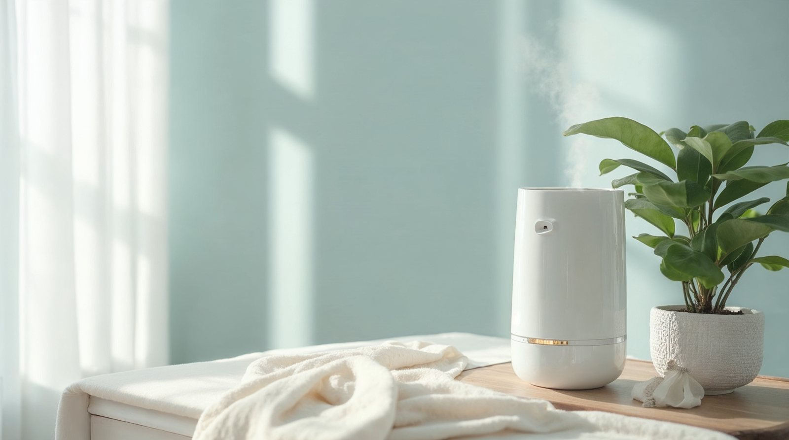
아기 얼굴과 몸에 붉은 발진이 올라오는 태열·영아 습진은 무엇이고 어떻게 살피나요?
아기 볼과 이마가 붉게 오돌토돌해지면 흔히 태열이라고 부릅니다. 땀띠, 지루피부염, 영아 습진이 어떻게 다른지, 소아청소년과에서 먼저 확인할 것과 집에서 하는 보습·온도 관리를 정리했습니다.
수정 2026-11-27

저녁만 되면 아기가 자지러지게 우는 영아 산통, 부모는 무엇을 알아 두고 어떻게 살피나요?
낮에는 잘 지내던 아기가 해 질 무렵부터 몇 시간씩 달래지지 않고 울 때, 영아 산통의 특징과 소아청소년과에서 먼저 확인할 것, 집에서 해 볼 수 있는 달래기와 부모 쉼을 정리했습니다.
수정 2026-11-27

수험생이 쉽게 지치고 집중이 오래가지 않을 때, 체력과 집중력은 어떻게 살피나요?
책상에 오래 앉아 있어도 집중은 짧고 몸은 늘 무거운 수험생이 많습니다. 잠, 식사, 움직임, 긴장이 체력과 집중력을 어떻게 흔드는지, 집에서 점검할 것과 한의원에서 함께 살피는 부분을 정리했습니다.
수정 2026-11-27
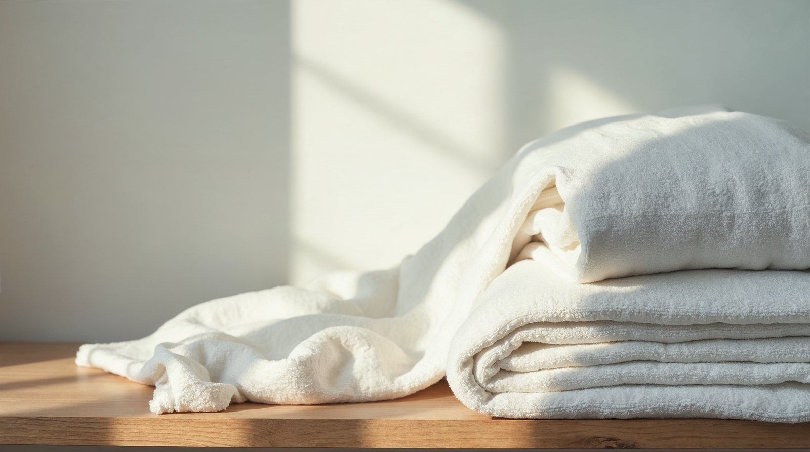
겨울만 되면 아이 피부가 건조하고 가려울 때, 아토피와는 어떻게 다르고 어떻게 살피나요?
찬 바람이 불고 난방을 켜기 시작하면 아이 팔다리가 하얗게 일어나고 밤마다 긁는다면 겨울 건조 피부일 수 있습니다. 아토피 피부염과 어떻게 다른지, 목욕과 보습, 집 안 공기는 어떻게 챙기는지 정리했습니다.
수정 2026-11-26

아이가 배가 아프다고 할 때 위치와 시간은 어떻게 적어 두면 좋을까요?
아이가 가리키는 자리와 아프다고 하는 때(등교 전·식사 뒤·잠들기 전)를 적어 두면 살필 순서가 보입니다. 오른쪽 아랫배 통증, 초록색 구토, 피 섞인 변, 축 처짐은 바로 가까운 응급실로 가셔야 합니다.
수정 2026-11-26

아이가 눈을 자꾸 깜빡이거나 킁킁거리는 틱이 보일 때 부모는 무엇을 살피나요?
틱은 갑자기 빠르게 반복되는 움직임이나 소리로, 학령기 아이에게 흔하고 많은 경우 자라면서 줄어드는 것으로 알려져 있습니다. 지적하기보다 피로·잠·긴장을 함께 살피고, 소아청소년과 진료와 함께 한의원에서 몸 전체의 리듬을 봅니다.
수정 2026-11-27

잠든 아이가 뽀드득 이를 갈 때, 부모는 무엇을 살피고 어떻게 도와주나요?
아이 방에서 들리는 이 가는 소리는 부모를 놀라게 하지만 성장기에 흔히 보이는 모습이기도 합니다. 아이 이갈이가 생기는 까닭, 치과와 소아청소년과에서 먼저 확인할 것, 코골이·긴장·잠 습관과 함께 살피는 방법을 정리했습니다.
수정 2026-11-27

아이가 코를 골고 입을 벌리고 자는데 아데노이드가 크다는 말을 들었을 때는 어떻게 살피나요?
아이가 밤마다 코를 골고 입을 벌리고 잔다면 코막힘과 아데노이드·편도, 잠의 질을 함께 살펴야 합니다. 이비인후과 진료와 함께 집에서 기록할 것, 낮 생활에서 보이는 신호, 한의원에서 함께 보는 부분을 정리했습니다.
수정 2026-11-26

아이가 잠투정이 심하고 자다가 자주 깰 때는 어떤 점을 살펴보나요?
아이가 잠들기 어려워하고 자주 깰 때는 기상 시각부터 저녁, 잠자리 순서, 코골이까지 하루 리듬을 함께 살핍니다. 짧은 잠자리 순서를 매일 같은 차례로 두는 것부터 시작합니다.
수정 2026-11-26

아이가 누런 콧물을 몇 주째 흘리고 코가 막힐 때, 소아 축농증은 어떻게 살피나요?
감기는 지나간 것 같은데 아이가 누런 콧물과 코막힘, 밤기침을 몇 주째 달고 있으면 축농증이 걱정됩니다. 감기·비염과 다른 점, 코 세척과 잠자리 관리, 소아청소년과·이비인후과 진료와 함께 한의원에서 살피는 부분을 정리했습니다.
수정 2026-11-26
아이 키가 작은 것 같을 때 한의원에서는 무엇을 먼저 확인하나요?
아이 키가 걱정될 때는 한 번 잰 키보다 1년 동안 자란 정도와 부모 키, 사춘기 시기를 먼저 봅니다. 성장 검사는 소아청소년과에서 먼저 받고, 한의원은 키를 약속하지 않고 잠·식사·소화·활동 같은 생활 리듬을 살핍니다.
수정 2026-11-26
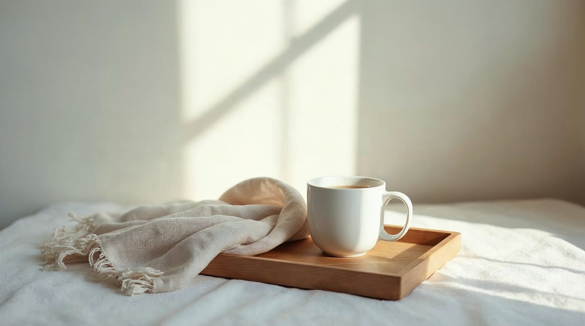
감기만 걸리면 귀가 아프다고 하는 아이, 반복되는 중이염은 어떻게 살피나요?
감기 끝에 귀가 아프고 열이 나는 중이염이 되풀이되면 부모님 걱정이 커집니다. 소아청소년과·이비인후과 치료는 이어 가면서 코와 귀의 연결, 집에서 챙길 것, 한의원에서 함께 살피는 부분을 정리했습니다.
수정 2026-11-26
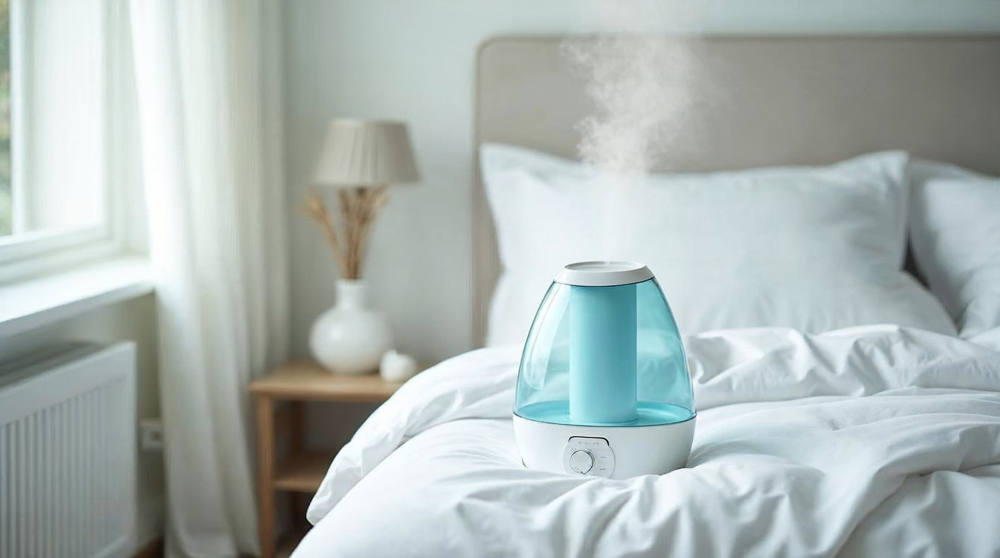
아이가 코피를 자주 흘릴 때는 무엇을 살피고, 집에서는 어떻게 멈추나요?
아이 코피는 대부분 콧구멍 앞쪽 가는 혈관에서 나며, 건조한 공기·코 파기·비염과 얽혀 반복됩니다. 바르게 멈추는 법과 습도·코 점막 관리를 익히고, 잦은 경우 이비인후과·소아청소년과 확인과 함께 몸 전체를 살핍니다.
수정 2026-11-26

아이가 머리가 아프다는 말을 자주 할 때(소아 두통)는 무엇을 살피나요?
아이 두통은 잠·식사·물·화면 시간·긴장과 얽혀 반복되는 경우가 많습니다. 아픈 때와 자리, 함께 오는 증상을 기록해 긴장성·편두통 흐름을 나눠 보고, 소아청소년과 진료와 함께 생활 리듬을 살핍니다.
수정 2026-11-26
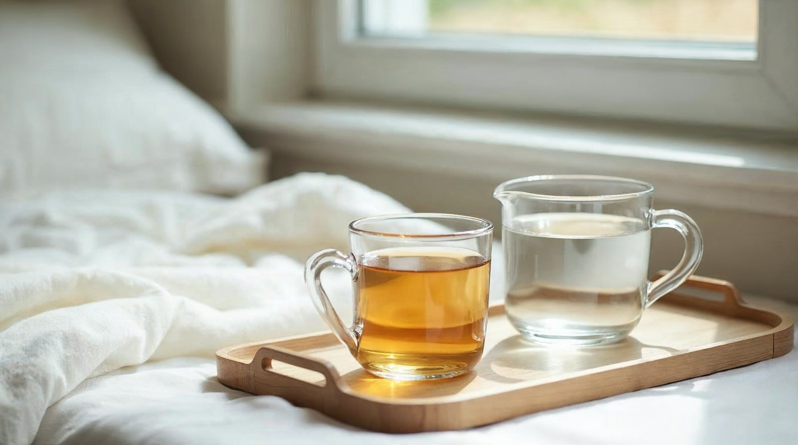
아이가 열이 자주 나고 감기만 걸리면 고열로 번질 때는 무엇을 살피나요?
아이가 한 달에도 몇 번씩 열이 오르면 부모의 밤은 길어집니다. 열이 왜 나는지, 해열제와 수분은 어떻게 챙기는지, 열이 잦은 아이의 잠·식사·회복 리듬을 한의원에서 어떻게 함께 살피는지 정리했습니다.
수정 2026-11-27
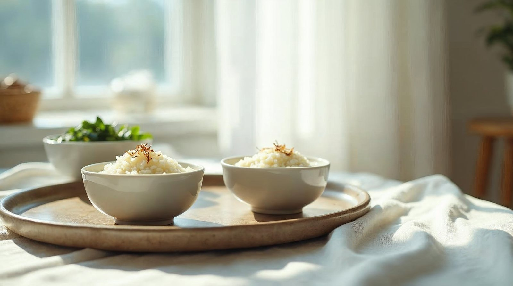
장염이나 수족구를 앓고 난 뒤 아이가 입맛과 기운을 되찾지 못할 때는 어떻게 살피나요?
장염이나 수족구가 지나간 뒤에도 아이가 밥을 잘 안 먹고 변이 묽거나 쉽게 지칠 때가 있습니다. 회복기 식사 순서, 수분과 잠, 다시 등원할 때 살필 점, 한의원에서 함께 볼 수 있는 부분을 정리했습니다.
수정 2026-11-26
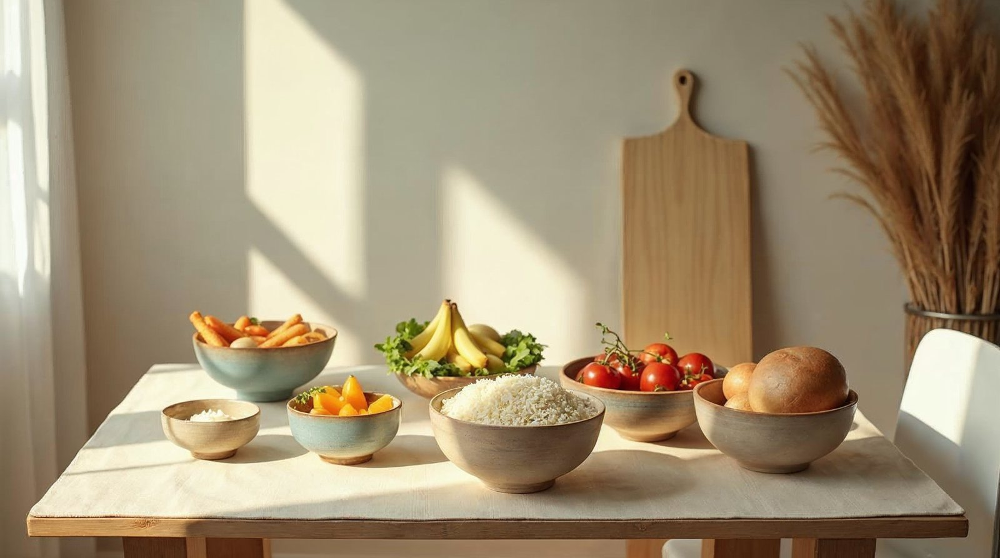
아이가 입이 짧고 편식이 심할 때는 어떻게 살피나요?
편식과 입 짧음은 한 끼보다 몇 주의 흐름과 키·몸무게가 자라는 선으로 봅니다. 억지로 먹이기보다 식사·간식·활동 리듬을 정리하고, 소화와 대변, 잠까지 함께 살핍니다.
수정 2026-11-26
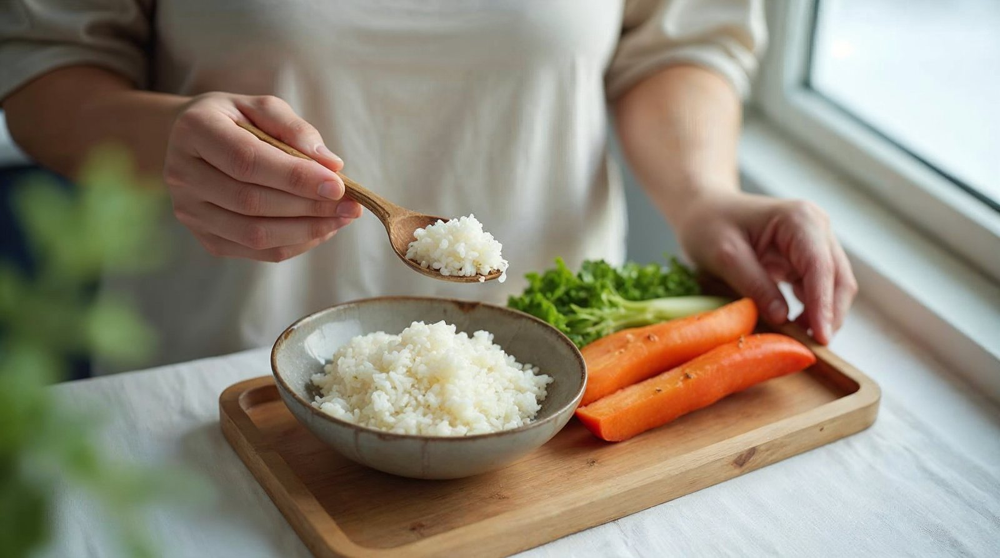
아이가 살이 많이 쪘다는 말을 들었을 때(소아 비만), 부모는 무엇부터 살피나요?
소아 비만은 몸무게 숫자보다 성장 곡선과 식사·잠·활동의 흐름을 함께 보는 것이 먼저입니다. 소아청소년과 확인을 바탕으로, 한의원에서는 아이의 소화·잠·식욕·활동을 아이 눈높이에 맞춰 살핍니다.
수정 2026-11-26

잠든 아이가 갑자기 비명을 지르며 깨거나 자다가 일어나 돌아다닐 때(야경증·몽유), 부모는 어떻게 하나요?
잠든 지 한두 시간 뒤 아이가 눈을 뜬 채 소리를 지르거나 집 안을 돌아다니면 부모는 크게 놀랍니다. 야경증과 몽유가 악몽과 어떻게 다른지, 그 순간 부모가 할 일과 집 안 안전, 잠 습관 관리를 정리했습니다.
수정 2026-11-27

아이가 손톱을 자꾸 물어뜯을 때, 혼내기 전에 무엇을 살피고 어떻게 도와주나요?
손톱 물어뜯기는 많은 아이에게 보이는 습관이지만, 긴장과 지루함, 잠과 생활 리듬이 함께 얽혀 있곤 합니다. 혼내기보다 먼저 살필 것, 손을 바쁘게 하는 방법, 손끝 상처 관리와 상담할 때를 정리했습니다.
수정 2026-11-27
아이가 차나 버스만 타면 속이 메스껍고 토하는 멀미는 왜 생기고 어떻게 살피나요?
차에 오르고 얼마 지나지 않아 얼굴이 하얘지고 토하는 아이의 멀미는 눈과 귀의 균형 감각이 엇갈리며 생깁니다. 나이에 따른 차이, 출발 전 준비와 차 안 습관, 한의원에서 함께 살피는 부분을 정리했습니다.
수정 2026-11-27
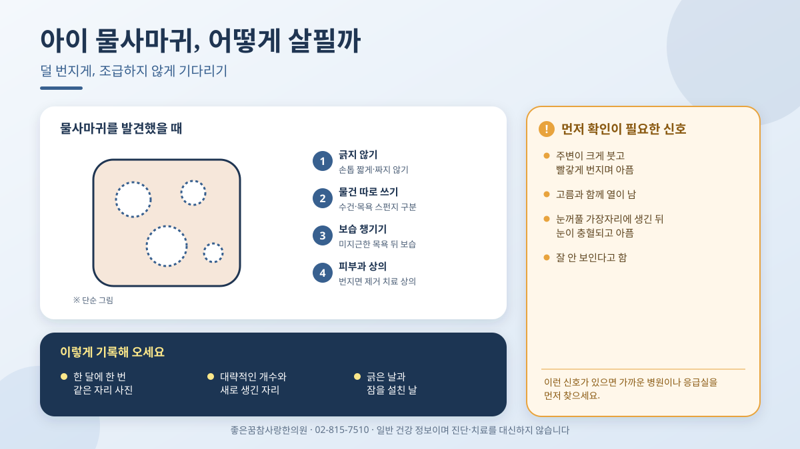
아이 몸에 좁쌀 같은 물사마귀가 자꾸 번질 때는 어떻게 살피나요?
아이 겨드랑이나 배, 팔 안쪽에 가운데가 오목한 작은 물사마귀가 하나둘 늘어나면 떼야 할지 기다려야 할지 고민됩니다. 물사마귀가 생기고 번지는 이유, 목욕·수영·아토피와의 관계, 피부과 진료와 함께 살필 점을 정리했습니다.
수정 2026-11-27

조금만 놀아도 금방 지치고 체력이 약해 보이는 아이는 무엇을 살피고 어떻게 지내면 좋을까요?
친구들보다 먼저 주저앉고 하교 뒤 늘 누워 있는 아이를 보면 체력이 걱정됩니다. 잠, 식사, 활동량, 마음의 피로를 차례로 살피는 방법과 소아청소년과에서 먼저 확인할 것, 체력을 쌓는 생활 습관을 정리했습니다.
수정 2026-11-27
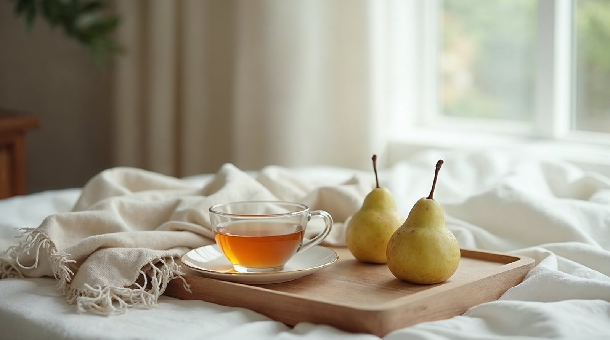
감기는 지나갔는데 아이 기침이 몇 주째 이어질 때는 무엇을 살피나요?
감기 뒤 아이 기침이 3주 넘게 이어지면 코 뒤로 넘어가는 콧물, 예민해진 기관지, 생활 환경을 함께 살펴야 합니다. 기침의 때와 소리를 어떻게 기록하고, 소아청소년과 진료와 함께 한의원에서 무엇을 보는지 정리했습니다.
수정 2026-11-26

아이 몸에 두드러기가 올라왔다 사라지기를 반복할 때는 무엇을 살피나요?
아이 피부에 모기 물린 듯 부푼 자국이 갑자기 올라와 몇 시간 뒤 사라지고 또 생기면 부모는 원인부터 궁금해집니다. 두드러기가 생기는 이유, 감기·음식·약과의 관계, 집에서 살필 점과 한의원에서 함께 보는 부분을 정리했습니다.
수정 2026-11-27
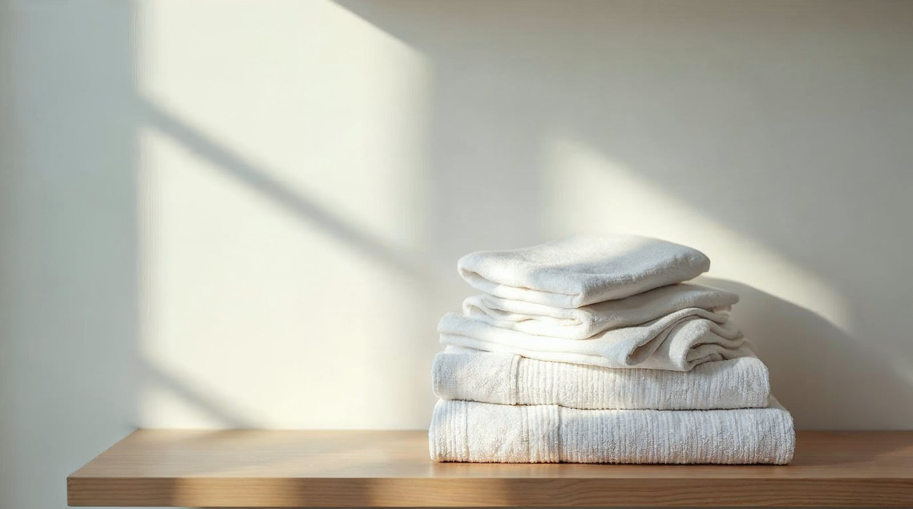
밥 먹을 때나 잠들 때 땀을 유난히 많이 흘리는 아이는 무엇을 살피나요?
아이가 땀을 많이 흘리는 모습은 흔하지만, 땀 뒤에 쉽게 지치거나 감기가 잦다면 함께 살펴볼 만합니다. 땀이 나는 때와 자리, 방 온도와 옷, 먹는 것과 잠을 어떻게 기록하고 한의원에서 무엇을 보는지 정리했습니다.
수정 2026-11-26

아이가 밤마다 다리가 아프다고 할 때, 성장통인지 어떻게 살피나요?
성장통은 낮에는 잘 놀던 아이가 저녁이나 밤에 양쪽 다리를 아파하다 아침이면 괜찮아지는 모양을 말합니다. 성장통의 특징과 다른 원인을 구분하는 기준, 집에서 해 줄 수 있는 돌봄, 낮의 활동과 잠을 함께 살핍니다.
수정 2026-11-27
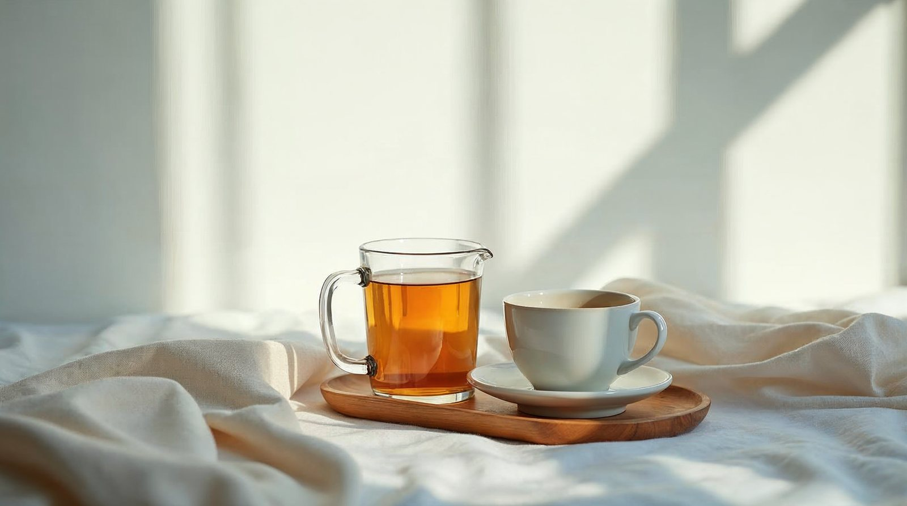
아이가 자주 토하고 조금만 먹어도 게워 낼 때는 무엇을 살피나요?
밥을 먹다가, 기침하다가, 차를 타다가 아이가 자주 토하면 부모 마음이 철렁합니다. 아이 구토가 왜 잦은지, 게움과 토함의 차이, 물 먹이는 순서와 탈수 신호, 소아청소년과와 한의원에서 함께 살피는 점을 정리했습니다.
수정 2026-11-27

아이 변이 자주 묽고 설사가 잦을 때는 무엇을 살피나요?
장염도 아닌데 아이 변이 자주 묽고 하루에도 몇 번씩 화장실을 찾는다면 보호자 마음이 쓰입니다. 걱정이 덜한 묽은 변과 살펴볼 묽은 변을 나누는 법, 집에서 할 수 있는 것과 한의원에서 함께 살피는 것을 정리했습니다.
수정 2026-11-26
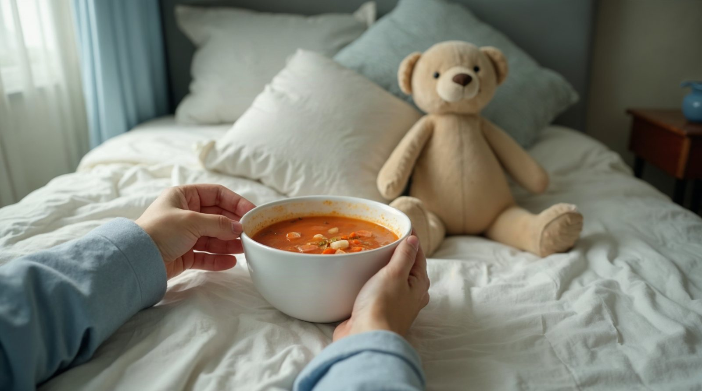
아이가 감기에 자주 걸리고 코가 막힐 때는 어떤 점을 살펴보나요?
아이가 감기를 달고 살면 한 해 몇 번, 한 번에 며칠 앓는지와 단체 생활, 코막힘·입 호흡, 잠과 식사를 먼저 살핍니다. 고열이 이어지거나 숨쉬기 힘들어하거나 축 처지면 바로 소아청소년과나 가까운 응급실로 가셔야 합니다.
수정 2026-11-26
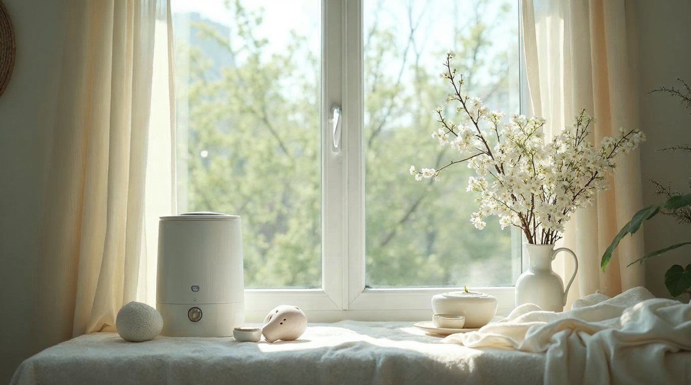
아이가 눈을 자꾸 비비고 깜빡일 때는 무엇 때문이고 어떻게 살피나요?
아이가 손등으로 눈을 자주 비비면 가려운 건지, 졸린 건지, 눈이 나빠진 건지 헷갈립니다. 알레르기·건조·화면 피로·습관처럼 눈 비비기와 이어진 이유, 안과 진료와 함께 집과 한의원에서 살필 점을 정리했습니다.
수정 2026-11-27
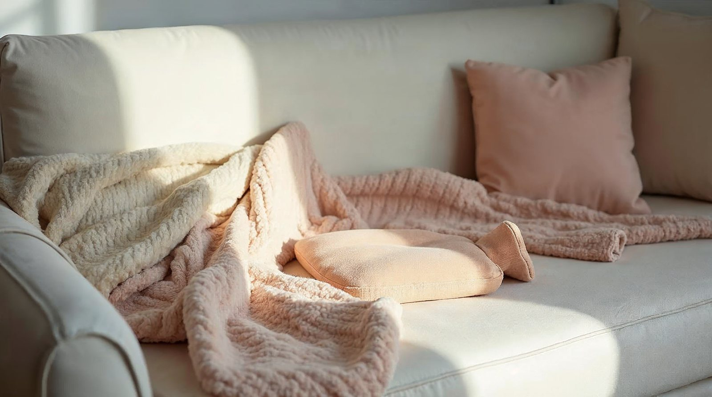
아이가 툭하면 체했다며 명치를 아파하고 밥맛을 잃을 때는 어떻게 살피나요?
조금만 급하게 먹거나 긴장하면 명치가 답답하다며 숟가락을 내려놓는 아이가 있습니다. 잘 체하는 아이의 속이 왜 쉽게 막히는지, 집에서 무엇을 바꿔 보고 진료실에서는 무엇을 살피는지 정리했습니다.
수정 2026-11-26
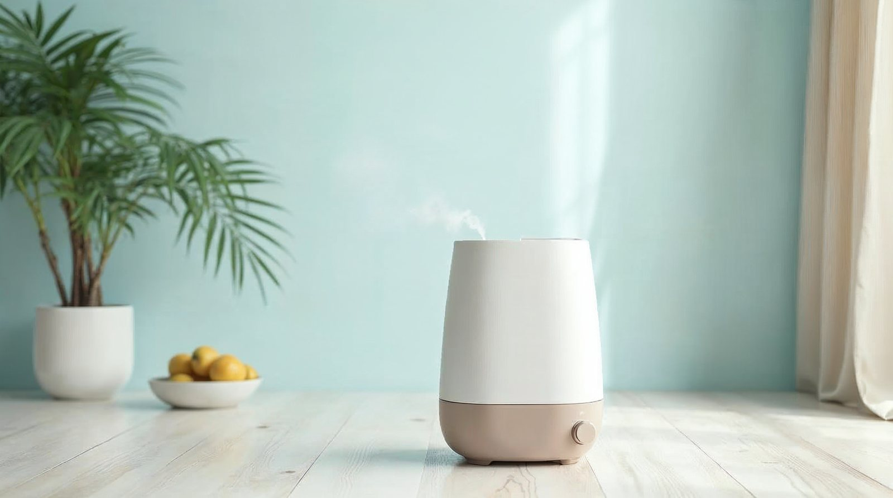
아이 눈 밑이 늘 거뭇한 다크서클은 왜 생기고 무엇을 살피나요?
아이 눈 밑이 늘 어둡고 푸르스름하면 잠이 부족한지, 어디가 약한지 걱정이 됩니다. 코막힘과 알레르기, 잠, 눈 비비기, 피부 결처럼 다크서클과 이어진 이유와 집에서 살필 점, 한의원에서 함께 보는 부분을 정리했습니다.
수정 2026-11-27
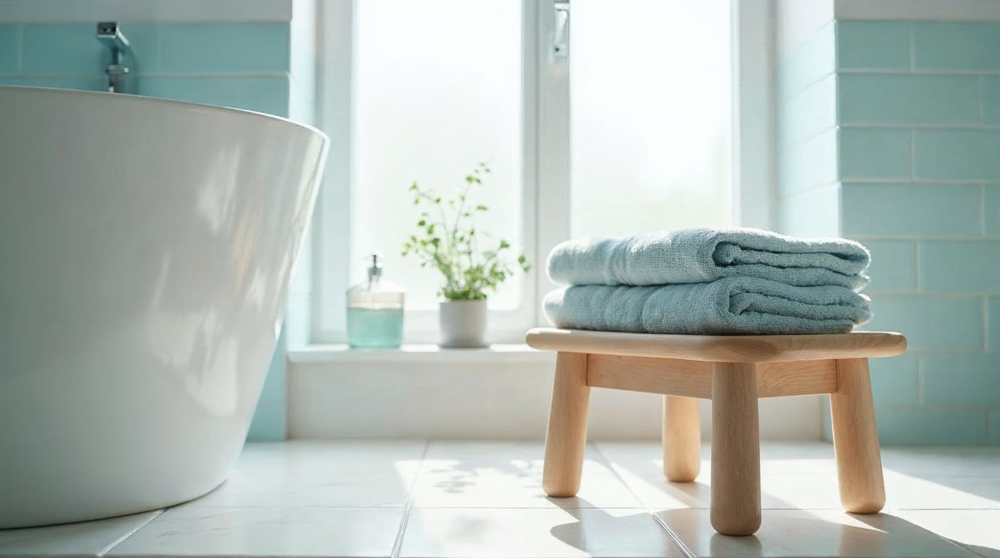
아이가 며칠씩 변을 못 보거나 화장실 가기를 무서워하는 소아 변비는 어떻게 살피나요?
아이 변비는 먹는 것과 물, 움직임뿐 아니라 화장실에 대한 기억과 참는 습관이 함께 얽혀 있습니다. 소아청소년과 진료와 함께 집에서 배변 습관을 어떻게 잡고, 한의원에서 무엇을 함께 살피는지 정리했습니다.
수정 2026-11-26
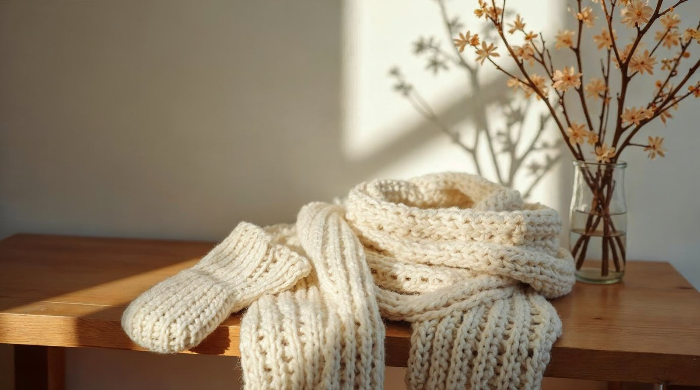
계절과 상관없이 손발이 늘 차가운 아이는 무엇을 살피고 어떻게 지내면 좋을까요?
아이 손을 잡을 때마다 차가워서 걱정될 때, 성장기 아이의 체온 조절과 활동량, 식사, 잠을 함께 살피는 방법과 소아청소년과에서 먼저 확인할 신호, 집에서의 옷과 놀이 습관을 정리했습니다.
수정 2026-11-27

아이가 밤에 자다가 소변을 볼 때(야뇨증) 어떻게 살피나요?
야뇨는 아이 잘못이 아니니 꾸짖지 말고 나이와 횟수, 저녁 수분, 변비, 잠의 깊이를 먼저 살핍니다. 낮에도 지리거나 소변 볼 때 아파하거나, 가리던 아이가 갑자기 다시 시작했다면 소아청소년과나 비뇨의학과 진료가 먼저입니다.
수정 2026-11-26

아이 입에서 냄새가 날 때, 양치 말고도 코·편도·속과 생활 습관은 어떻게 살피나요?
아이를 안아 주다 입냄새가 느껴지면 양치를 잘못했나 싶어 걱정됩니다. 아이 입냄새가 입속, 코와 편도, 입으로 숨 쉬는 습관, 식사와 변비와 어떻게 이어지는지, 치과와 소아청소년과에서 먼저 확인할 것과 집에서의 관리를 정리했습니다.
수정 2026-11-27

아이 피부가 건조하고 밤마다 긁어서 깨는 소아 아토피 피부염은 어떻게 살피나요?
아이 아토피는 보습과 목욕, 옷, 실내 습도, 잠과 먹는 것까지 하루가 함께 움직입니다. 소아청소년과·피부과 치료는 이어 가면서 가려움의 흐름을 어떻게 기록하고 한의원에서 무엇을 함께 살피는지 정리했습니다.
수정 2026-11-26
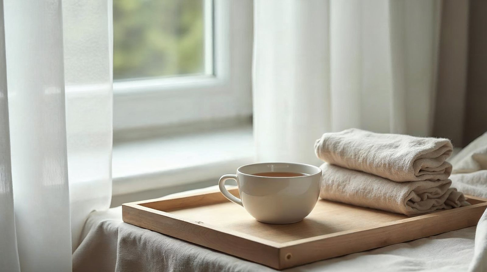
감기 뒤나 뛰고 나면 숨소리가 쌕쌕거리는 아이, 소아 천식은 어떻게 살피나요?
감기 끝이나 뛰어논 뒤, 밤과 새벽에 쌕쌕거리는 숨소리와 기침이 되풀이되면 소아 천식을 함께 살펴야 합니다. 소아청소년과 치료와 흡입기는 그대로 이어 가면서 집에서 챙길 것과 한의원에서 함께 보는 부분을 정리했습니다.
수정 2026-11-26

아이 머리에 동전만 한 자리가 비어 보일 때, 소아 원형탈모는 어떻게 살피나요?
아이 머리를 감기다 동그랗게 머리카락이 빠진 자리를 발견하면 부모는 덜컥 겁이 납니다. 소아 원형탈모가 생기는 이유, 곰팡이 감염·머리 뽑는 버릇과의 차이, 피부과 진료와 함께 집과 한의원에서 살필 점을 정리했습니다.
수정 2026-11-27
아이가 아침마다 재채기와 맑은 콧물, 코막힘을 달고 사는 알레르기 비염은 어떻게 살피나요?
열 없이 맑은 콧물·재채기·코막힘·코 가려움이 2주 넘게 이어지거나 계절마다 되풀이되면 알레르기 비염일 수 있습니다. 소아청소년과·이비인후과 진료와 함께 한의원에서는 잠·식욕·대변·몸의 온도를 살핍니다.
수정 2026-11-26
아이가 산만하고 집중을 못 해 ADHD가 걱정될 때, 부모는 무엇을 먼저 살피나요?
아이가 산만하고 집중을 못 할 때 맥 하나로 ADHD를 판단하지는 않습니다. 한의원에서는 다른 곳에서 받은 평가와 치료를 존중하며 잠·식사·소화·긴장 같은 생활의 바탕을 아이와 함께 살핍니다.
수정 2026-11-27
아이가 눈썰매나 스케이트를 타다 넘어져 손목을 아파하면 무엇부터 확인하나요?
아이가 넘어지며 손을 짚은 뒤 손목을 아파하면 뼈를 다쳤는지 확인하는 것이 먼저라, 붓기와 손을 쓰는 모습을 보고 영상 검사가 가능한 의료기관에서 확인한 뒤 남은 불편을 살핍니다.
수정 2026-11-26

중고등학생 아이가 아침을 거르고 등교할 때는 어떻게 살피나요?
중고등학생 아이가 아침을 거르고 등교한다면 들고 갈 수 있는 간단한 아침을 준비하고, 전날 야식은 잠들기 2시간 전에 마치며 일어나서 따뜻한 물 한 컵부터 마시게 하는 것으로 시작해 보시기를 권합니다.
수정 2026-11-27

성장기 아이가 갑자기 많이 먹고 늘 배고프다고 할 때는 무엇을 살피나요?
성장기 아이가 갑자기 많이 먹고 늘 배고프다고 하면 학원 가기 전 든든한 간식, 밤에는 가벼운 것, 식사 때 단백질과 채소를 고르게 챙기는 것부터 하고, 먹는 시각과 잠, 활동량을 함께 살핍니다.
수정 2026-11-26
무거운 책가방을 메고 언덕길로 등하교하는 아이가 어깨와 허리가 아프다고 할 때는 어떻게 살피나요?
무거운 책가방을 한쪽 어깨로 메거나 낮게 늘어뜨린 채 언덕을 오르면 아이의 어깨와 허리에 부담이 갈 수 있어, 가방 무게와 메는 방식, 아픈 시간과 위치를 먼저 묻고 가방을 가볍게 하는 방법을 함께 정리합니다.
수정 2026-11-26
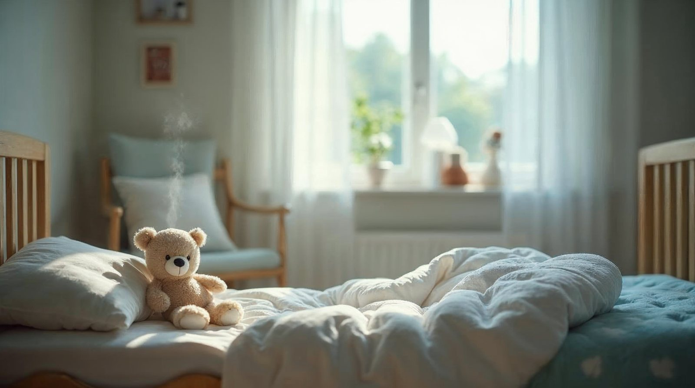
아이가 자면서 코를 골고 입으로 숨 쉴 때는 어떻게 살피나요?
아이가 자면서 코를 골고 입으로 숨 쉬며 숨이 멎는 듯한 모습이 있으면 편도와 아데노이드, 비염과 관련될 수 있어 소아청소년과나 이비인후과 진료를 먼저 권하고 한의원에서는 수면과 성장, 코막힘과 생활을 함께 살핍니다.
수정 2026-11-26

학원이 늦게 끝나 밤 9시 넘어 저녁을 먹는 아이의 소화와 잠은 어떻게 살피나요?
학원 일정 때문에 저녁을 늦게 먹고 바로 숙제하고 자는 생활이 이어지면 아이의 속이 더부룩하고 잠드는 시간이 늦어질 수 있어, 하루 식사 시간과 간식, 잠드는 시간을 먼저 묻고 학원 일정 안에서 바꿀 수 있는 방법을 함께 정리합니다.
수정 2026-11-26
키 걱정에 아이를 일찍 재우려는데 잠자리에서 계속 버틸 때는 어떻게 살피나요?
아이를 일찍 재우려 해도 잠들지 못한다면 잠드는 시각을 며칠마다 15분씩 앞당기고, 아침 기상 시각을 먼저 고정하며 잠들기 1시간 전 화면 끄기와 같은 순서를 반복하는 것부터 시작하시기를 권합니다.
수정 2026-11-26
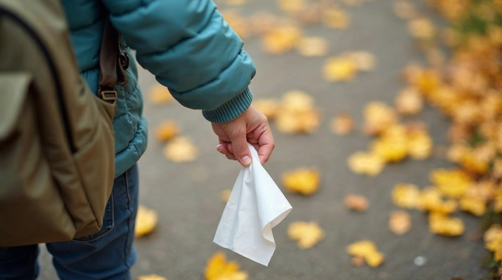
가을 환절기에 아이가 등굣길마다 코가 막히고 훌쩍일 때는 어떻게 살피나요?
가을 환절기에는 아침저녁 기온 차가 커서 등굣길 찬 공기에 아이가 코를 훌쩍이고 막혀 하는 경우가 있습니다. 증상이 심한 시간대와 옷차림, 교실 환경, 밤잠을 먼저 여쭙고 등교 아침 습관을 함께 점검합니다.
수정 2026-11-26
시험 기간만 되면 배가 아프다는 중고등학생은 어떻게 살피나요?
시험 기간마다 배가 아프다는 중고등학생은 긴장과 잠 부족, 아침 거르기와 야식이 겹친 경우가 많습니다. 배가 아픈 때와 식사·잠을 먼저 여쭙고 보호자와 함께 생활 리듬을 정리하는 방법을 담았습니다.
수정 2026-11-26

학생이 방학에 진료를 받을 때는 시간을 어떻게 정하면 되나요?
방학 중에는 늦잠과 학원 일정 때문에 하루 리듬이 흐트러지기 쉬워, 아이의 하루 일정과 보호자 일정을 함께 정리한 뒤 오전이나 오후 중 규칙적인 시간을 고르시면 진료를 이어가기 수월합니다.
수정 2026-11-26
수험생 상담에서는 어떤 이야기를 나누나요?
수험생 상담에서는 잠, 식사, 소화, 목·허리 자세, 시험 앞의 긴장을 학생 본인과 보호자에게 묻고, 시험 일정에 맞춰 일어나는 시각과 식사 시간 같은 생활 리듬을 함께 점검합니다.
수정 2026-11-26
아이가 휴대폰을 보다가 밤늦게 잠들 때는 어떻게 바꿔 갈 수 있을까요?
잠들기 전 휴대폰과 태블릿 사용은 잠드는 시간을 늦출 수 있어, 화면을 보는 시간과 장소, 잠드는 시간, 아침 기상을 먼저 묻고 가족이 함께 지킬 수 있는 규칙을 정리합니다.
수정 2026-11-26

아이가 밥을 몇 숟가락 먹고 안 먹으려 할 때는 무엇을 먼저 살피나요?
아이가 밥을 조금만 먹고 거부할 때는 간식 시간과 양, 식사 분위기, 활동량, 잠과 변 상태를 먼저 묻고 성장 곡선과 함께 살핍니다.
수정 2026-11-26
아이가 자면서 땀을 흠뻑 흘릴 때는 무엇을 먼저 살피나요?
아이가 잠들고 1~2시간 사이에 땀을 많이 흘리는 일은 흔하지만, 침실 온도와 이불, 잠자기 전 활동, 코골이 여부를 먼저 묻고 열이나 체중 변화가 있으면 소아청소년과 진료를 안내합니다.
수정 2026-11-26

아이가 차만 타면 멀미를 할 때는 어떻게 준비하면 좋을까요?
차멀미가 잦은 아이는 앉는 자리와 시선, 출발 전 식사, 차 안 공기를 먼저 살피고, 이동 전에 미리 준비할 수 있는 방법을 함께 정리합니다.
수정 2026-11-26

아이가 밤마다 다리가 아프다고 할 때는 무엇을 먼저 살피나요?
아이가 저녁이나 밤에 양쪽 다리가 아프다고 하는 경우 활동량과 아픈 위치, 낮의 모습을 먼저 묻고, 한쪽만 붓거나 절뚝거리면 바로 진료를 받도록 안내합니다.
수정 2026-11-26

어린이집에 다니면서 감기를 달고 사는 아이는 어떻게 살피나요?
어린이집에 다니기 시작한 아이가 감기에 자주 걸리는 일은 흔히 겪는 과정이지만, 걸리는 간격과 회복 기간, 잠과 식사, 변 상태를 함께 기록하고 살피며 열이 오래가면 소아청소년과 진료를 안내합니다.
수정 2026-11-26

초등학생이 되었는데 아직 밤에 이불에 실수할 때는 어떻게 살피나요?
초등학생의 야뇨는 아이마다 나아지는 시기가 다르고 꾸중보다 기록과 생활 조정이 중요해, 저녁 물 섭취와 잠드는 시간, 변비, 낮 소변 습관을 먼저 묻고 함께 살핍니다.
수정 2026-11-26